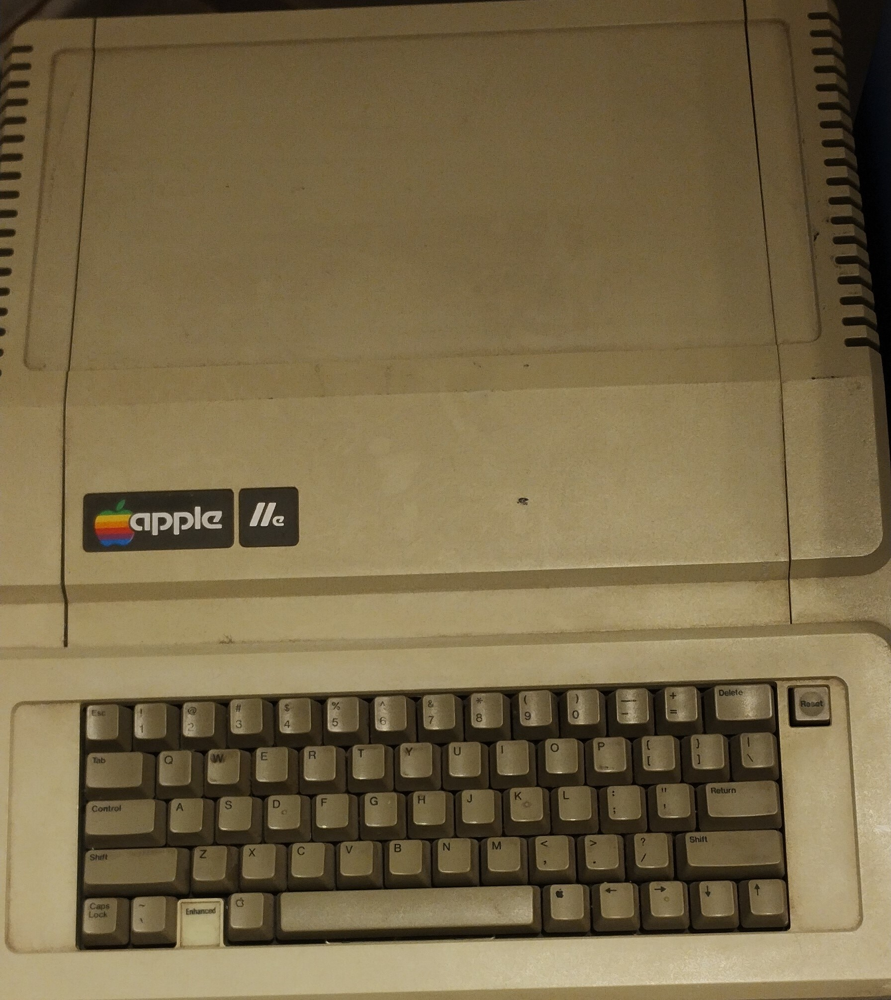
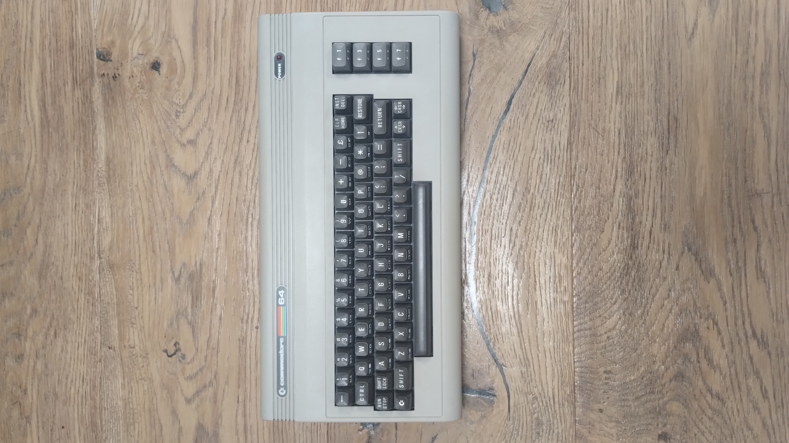
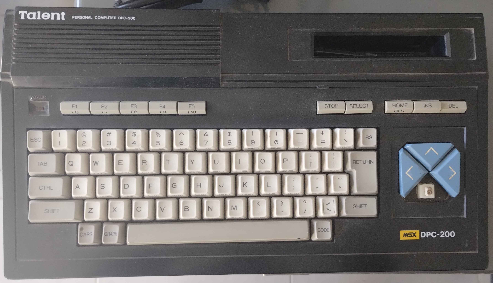
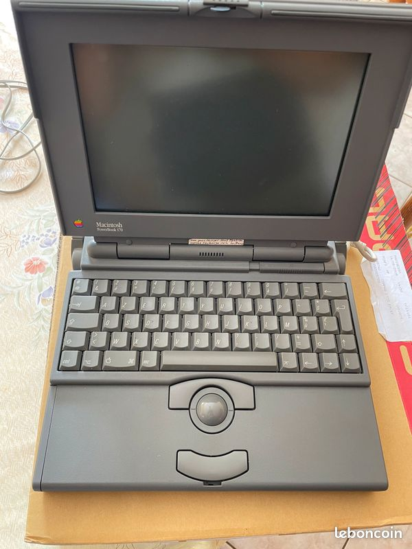
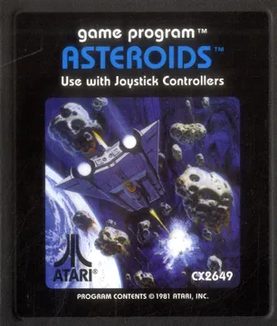

Una máquina para aprender
Apple IIe · 1983. Tecnología abierta a aulas, familias y una nueva generación de curiosos.
Un recorrido por las máquinas que acercaron la tecnología a nuestras casas. Cada vuelta de la espiral revela una nueva historia.
El QR abre este museo; después MindAR busca una imagen incluida en el .mind. Para mapear las piezas, compilá sus fotos en este orden: Apple IIe (0), Commodore 64 (1), DPC-200 (2), PowerBook 170 (3), Asteroids (4). La cámara requiere HTTPS.





Las computadoras no cambiaron solo de tamaño. Cambiaron quién podía crear, jugar, aprender y conectarse. Este archivo celebra esos primeros pasos.
Apple IIe · 1983. Tecnología abierta a aulas, familias y una nueva generación de curiosos.
Commodore 64 · 1982. Una computadora doméstica que hizo del teclado una puerta de entrada.
Talent DPC-200 · Una pieza de la historia regional de la computación y el juego.